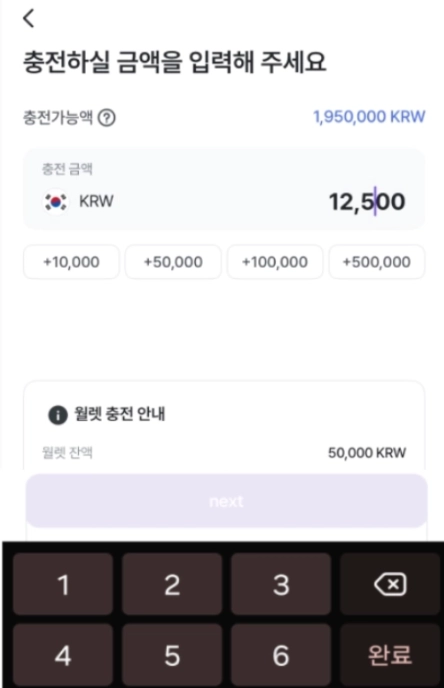
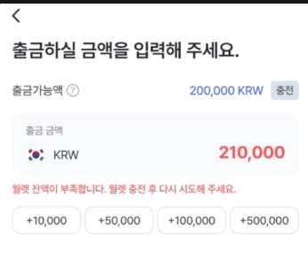

유핀테크허브(2024.10~2026.07)
해외송금 유트랜스퍼 한국앱(https://play.google.com/store/apps/details?id=com.utransfer.kr.app)
해외송금 유트랜스퍼 미국앱(https://play.google.com/store/apps/details?id=com.utransfer.us.app)
사용 기술
- Kotlin
- Multi Module
- Compose, MVI
- Clean Architecture
- DataBinding
- MVVM
- AAC
- ViewModel
- Lifecycle
- paging3
- Retrofit
- Coroutine, flow
- Hilt
개발 내용
- 미국 앱 수취인 정보 입력 화면을 나라별로 앱 로직에서 지정 되어 있는 구조에서 SDUI 구조로 개선
- XML, DataBinding, MVVM 구조에서 Compose와 MVI 패턴으로 60% Migration 진행
- 기존 디자인 시스템 커스텀 뷰 구조를 Compose로 구현 및 MVI 패턴으로 개선
- 오픈 뱅킹 거래내역 조회 시 Paging3 이용해 무한스크롤 구현
- 월렛 충전 시 금액 입력 화면 Compose, MVI 적용
- 입금 방식·입력 자릿수에 따라 달라지는 금액 단위 표시, 커서 위치 고정 로직 구현

- 은행계좌 입금 방식 케이스 예시 : 1자리 입력은 ×1,000원, 2자리 이상은 ×100원 (예: 1 → 1,000원 / 125 → 12,500원)
- 서버 데이터 기준 입력 값 발생할 때 마다 Validation 실행

- 입금 방식·입력 자릿수에 따라 달라지는 금액 단위 표시, 커서 위치 고정 로직 구현
- 오픈 뱅킹 포함 기능 런칭 시 금융보안원의 핀테크 서비스 취약점 검사 대응
- 취약점 결과 보고서에 발견된 신분증 인증 시 생년월일이 평문으로 메모리 덤프에서 보인다는 피드백 받은 후 Memory Profiler를 활용해 Heap Dump에 생년월일이 평문으로 보이는 것을 확인 후 생년월일 다루는 부분을 모두 암호화 후 서버 통신 이후 즉시 메모리에서 삭제(wipe)하는 로직 추가
- fastlane을 통해 플레이 스토어, Firebase Distribution에 앱 배포 자동화
- 코드 리뷰 시 Codex, Claude code 이용해 이중 체크
- 앱 크래시 대응